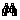
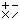
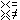
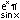

Toolbar
Next: File Menu
Up: File Window Contents
New file (Ctrl-N) : creates a new source file.
Open file (Ctrl-O) : loads a source file from disk.
Save file Window (Ctrl-S) : saves the current source file to disk.
Cut (Ctrl-X) : cuts the current selection to the clip board.
Copy (Ctrl-C) : copies the current selection to the clip board.
Paste (Ctrl-V) : pastes the contents of the clip board to the current
position.
Bold : makes the font of the selected text bold.
Italic : makes the font of the selected text italic.
Underline : underlines the selected text.
 Find... (Ctrl-F) : finds the first appearence of the given text.
Find next (Ctrl-G) : finds the next appearence of the given text.
File window contents : displays help on the file window.
Switch : switches between the source window and the output window.
Explorer window contents : displays help on the explorer window.
Parameters : shows the parameters dialog (Parameters Dialog).
 Operations : shows the operations dialog (Operations Dialog).
 Relations : shows the relations dialog (Relations Dialog).
Conversions : shows the conversions dialog (Conversions Dialog).
 Elementary : shows the elementary functions dialog (Elementary Functions Dialog).
Operands : shows the operands dialog (Operands Dialog).
 Execute : executes the source file.
Execute : executes the source file.